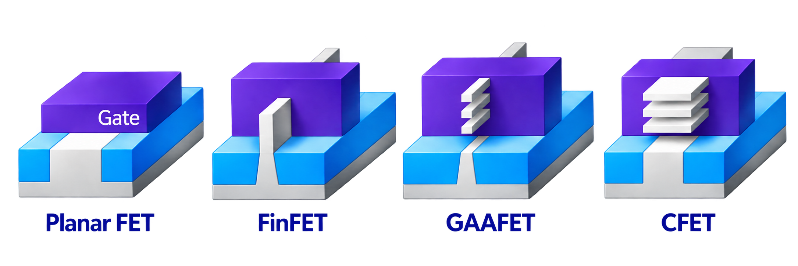
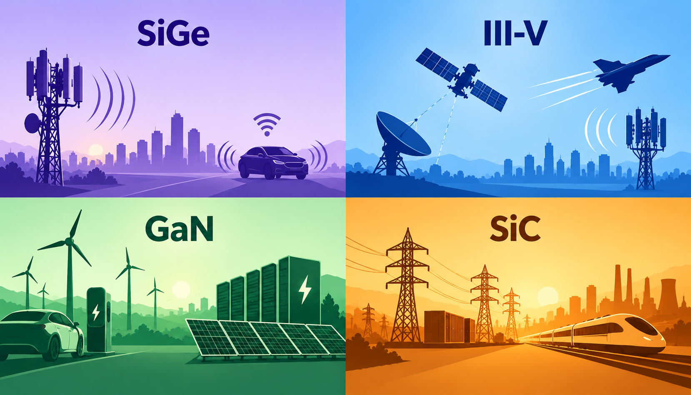
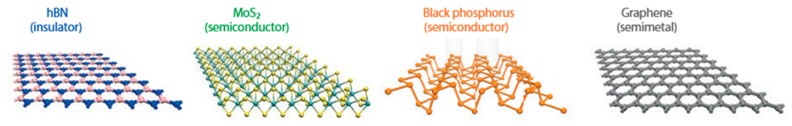
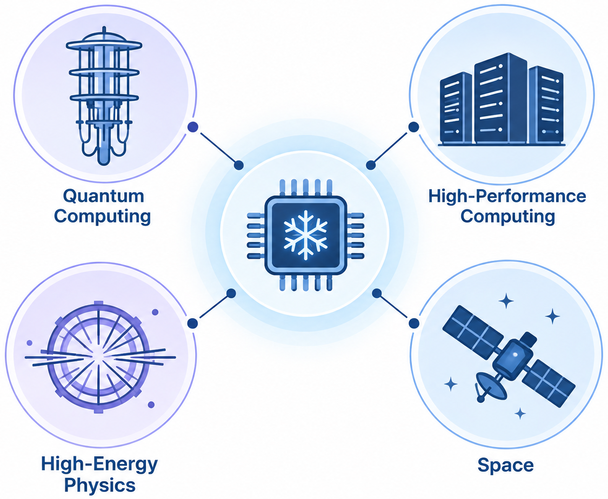

Limits of Conventional Scaling
For decades, semiconductor progress was driven by continuously shrinking transistor dimensions, initially supported by the principles of Dennard scaling [1]. This approach enabled higher transistor densities, improved performance, and increasingly complex integrated circuits within a given chip area. As devices entered the nanoscale regime, however, voltage scaling could no longer keep pace with dimensional scaling, while leakage, short-channel effects, variability, and power density became increasingly significant. These challenges make it progressively more difficult to achieve the traditional benefits of scaling by reducing physical dimensions alone. As illustrated conceptually in Fig. 1, simply making conventional transistors smaller is therefore no longer sufficient. Continued progress requires a broader combination of new device architectures, materials, integration approaches, and operating regimes, opening new frontiers for nanoscale semiconductor technology.
From FinFETs to Gate-All-Around and Beyond
One of the most important developments in advanced CMOS technology has been the transition from planar transistors toward increasingly three-dimensional device architectures. As illustrated in Fig. 2, this evolution has progressed from planar FETs to FinFETs and further toward gate-all-around FETs (GAAFETs) and complementary FETs (CFETs). Rather than relying solely on reducing physical dimensions, these architectures progressively increase the degree of electrostatic control that the gate has over the transistor channel.
FinFETs marked a major departure from the traditional planar structure by forming the channel as a vertical fin. With the gate controlling the channel from multiple sides, FinFETs provide improved electrostatic integrity and better suppression of short-channel effects. GAAFETs extend this principle by surrounding the channel with the gate. Vertically stacked nanowires or nanosheets can be used to provide multiple channels within a compact footprint, combining strong electrostatic control with a larger effective channel width [2].
The progression does not stop at the individual transistor. CFETs extend scaling into the vertical dimension by stacking n-type and p-type transistors on top of each other instead of placing them side by side. This removes part of the lateral nMOS–pMOS separation from the standard-cell footprint and provides another route toward increasing logic density [3]. The evolution from planar FETs through FinFETs and GAAFETs toward CFETs therefore represents a gradual transition from primarily lateral scaling toward increasingly three-dimensional device and circuit architectures.

The Silicon Alternatives
The search for new semiconductor technologies is not limited to changing transistor geometry. Different semiconductor materials offer electrical and physical properties that can be advantageous for specific operating conditions and applications. Figure 3 highlights four important material families and representative application areas where they are increasingly relevant.
Silicon-germanium (SiGe) combines compatibility with established silicon technology with improved carrier transport and has become particularly important for high-frequency and RF electronics. SiGe heterojunction bipolar transistors are widely used in communication, radar, and high-speed mixed-signal circuits. III–V compound semiconductors such as InP and InGaAs offer very high carrier velocities and excellent high-frequency performance, making them particularly attractive for millimeter-wave and terahertz electronics [4]. These properties also make III–V technologies interesting for applications where operation far beyond conventional microwave frequencies is required.
Wide-bandgap semiconductors extend the material landscape in a different direction. GaN combines a wide bandgap, high breakdown field, and high electron mobility, enabling efficient operation at high voltages and switching frequencies. These characteristics have made GaN increasingly relevant for power conversion, RF power electronics, and emerging automotive systems. SiC similarly offers a wide bandgap and high breakdown field, together with excellent thermal robustness, making it well suited for demanding high-power and high-temperature environments [5]. Such characteristics are also attractive for electronics operating under challenging conditions, including aerospace and space applications. These material systems should not be viewed simply as replacements for silicon. Instead, each occupies a different technological space, with its properties determining where it provides the greatest advantage.

The Rise of Two-Dimensional Materials
Two-dimensional (2D) materials introduce a fundamentally different approach to nanoscale electronics. Unlike conventional bulk semiconductors, these materials can consist of individual or only a few atomic layers, resulting in extremely thin electronic channels. Importantly, 2D materials are not a single class of semiconductor. As illustrated in Fig. 4, they span a broad range of electronic properties, from wide-bandgap insulators such as hexagonal boron nitride (hBN), through semiconductors such as MoS$_2$ and black phosphorus, to semimetals such as graphene.
For transistor applications, semiconducting 2D materials are particularly interesting because their atomically thin channels can provide strong electrostatic gate control even at very small dimensions. More broadly, transition-metal dichalcogenides such as MoS$_2$, WS$_2$, and WSe$_2$ offer finite bandgaps while retaining channel thicknesses below a nanometer, making them attractive candidates for aggressively scaled transistors [7].
Another distinctive feature of 2D materials is that different layers can be combined through van der Waals interactions without requiring the conventional lattice matching associated with many bulk semiconductor heterostructures. This creates opportunities to combine conducting, semiconducting, and insulating 2D layers within vertically integrated structures. At the same time, significant challenges remain before such devices can be introduced into large-scale semiconductor manufacturing. Contact resistance, dielectric integration, controlled doping, material uniformity, defects, and wafer-scale growth are among the key issues that still need to be addressed [7]. Nevertheless, the combination of atomic-scale thickness and a remarkably diverse range of electronic properties makes 2D materials an important platform for exploring future generations of nanoscale devices.

Entering the Cryogenic Regime
Semiconductor technology is increasingly being pushed far beyond its conventional room-temperature operating environment. Temperatures ranging from a few kelvin down to the millikelvin regime are relevant to a growing number of electronic systems. As illustrated in Fig. 5, this development is being driven by applications including quantum computing, high-performance computing (HPC), high-energy physics, and space technologies.
Quantum computing is one of the most prominent drivers, with many quantum processors requiring temperatures close to absolute zero. As these systems grow in complexity, parts of the control and readout electronics are also being brought into the cryogenic environment to reduce the enormous interconnection challenge between the quantum processor and room-temperature electronics. Cryogenic electronics are similarly important in high-energy physics, where highly sensitive detectors and their associated electronics may operate at very low temperatures. Space technologies must withstand extreme thermal environments, while cryogenic operation is also being explored for future HPC systems, where reduced leakage and interconnect resistance together with changes in transistor performance may offer technological advantages [8].
Operating at such low temperatures, however, significantly alters the underlying semiconductor physics. Reduced phonon scattering can improve carrier mobility, while leakage currents can decrease substantially. At the same time, threshold voltage, subthreshold characteristics, series resistance, and other device properties can change considerably. At sufficiently low temperatures, effects such as incomplete dopant ionization and interface trapping also become increasingly important. The cryogenic regime therefore presents a distinct set of opportunities and challenges as semiconductor technologies expand into applications operating far below conventional temperatures.

Conclusion
The future of nanoscale semiconductor technology will not be defined by a single device, material, or scaling strategy. Instead, continued progress will come from selecting and combining technologies according to the demands of increasingly diverse applications. Three-dimensional transistor architectures can extend the capabilities of CMOS, alternative and two-dimensional materials can provide properties unavailable in conventional silicon, and cryogenic operation opens entirely different application spaces. Together, these developments point toward a semiconductor landscape that is becoming more specialized and technologically diverse, with innovation increasingly driven by what each application requires rather than by dimensional scaling alone.
References
- R. H. Dennard, F. H. Gaensslen, H.-N. Yu, V. L. Rideout, E. Bassous, and A. R. LeBlanc, “Design of ion-implanted MOSFET's with very small physical dimensions,” IEEE Journal of Solid-State Circuits, vol. 9, no. 5, pp. 256–268, Oct. 1974, doi: 10.1109/JSSC.1974.1050511.
- N. Loubet et al., “Stacked nanosheet gate-all-around transistor to enable scaling beyond FinFET,” in Proc. IEEE Symp. VLSI Technology, Kyoto, Japan, 2017, pp. T230–T231, doi: 10.23919/VLSIT.2017.7998183.
- J. Ryckaert et al., “The complementary FET (CFET) for CMOS scaling beyond N3,” in Proc. IEEE Symp. VLSI Technology, Honolulu, HI, USA, 2018, pp. 141–142, doi: 10.1109/VLSIT.2018.8510618.
- K. Tomioka, M. Yoshimura, and T. Fukui, “A III–V nanowire channel on silicon for high-performance vertical transistors,” Nature, vol. 488, pp. 189–192, Aug. 2012, doi: 10.1038/nature11293.
- J. Kim et al., “Remote epitaxy and freestanding wide bandgap semiconductor membrane technology,” Nature Reviews Electrical Engineering, 2024, doi: 10.1038/s44287-024-00091-0.
- B. Radisavljevic, A. Radenovic, J. Brivio, V. Giacometti, and A. Kis, “Single-layer MoS$_2$ transistors,” Nature Nanotechnology, vol. 6, pp. 147–150, Mar. 2011, doi: 10.1038/nnano.2010.279.
- S. Das et al., “Transistors based on two-dimensional materials for future integrated circuits,” Nature Electronics, vol. 4, pp. 786–799, Nov. 2021, doi: 10.1038/s41928-021-00670-1.
- F. Bashir, H. Abbas, A. Nisar, U. I. Bature, A. Alzahrani, and F. Zahoor, “Cryogenic electronics for high performance computing applications: A comprehensive review,” Materials Today Physics, vol. 59, Art. no. 101960, Dec. 2025, doi: 10.1016/j.mtphys.2025.101960.